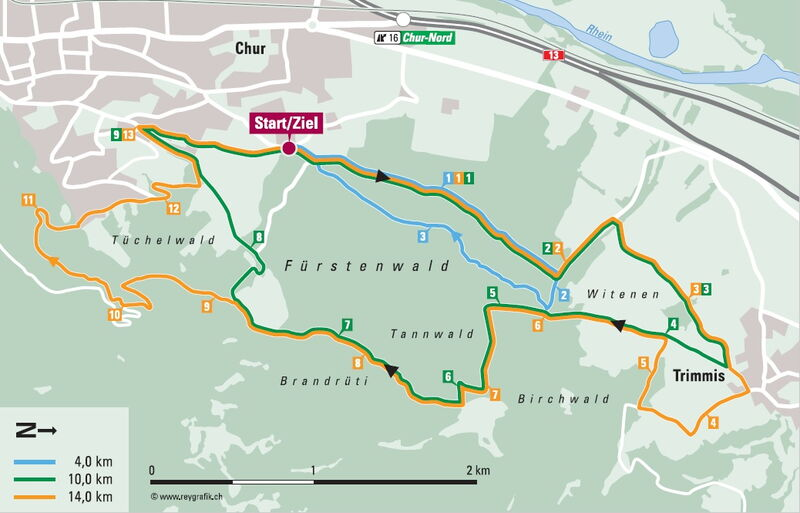

Alpinrunner - wir sind:
Seit 2004 beschreiben wir Laufstrecken in Graubünden. Jeweils an den Wochenenden erkunden wir neue Strecken, manchmal mit mehr als 25 Km und 1500 hm. Teilweise laufen wir in alpinem Gelände jedoch immer auf Wanderwegen. Oft laufen wir von einem Tal ins nächste Tal, oder suchen einen schönen Höhenweg mit tollen Aussichten. Das Tempo passen wir dem Gelände an und geniessen dabei die schöne Landschaft. Wir haben auch Zeit um Pausen einzulegen.
Läufer/innen mit guter Ausdauer sind herzlich Eingeladen mit uns mit zu laufen.
Unsere Alpinrunner-Freunde begleiten uns oft auf Erlebnistouren und Anlässen. Melde dich auch gleich an als Alpinrunner Freund
Lauftreff Chur
Der Lauftreff findet jeden Mittwoch um 19.00 Uhr bis 20.00 Uhr statt. Zur Sommerzeit beim Waldhausstall, zur Winterzeit bei der Bushaltestelle Obere AU Hallenbad
Dauerlauf in 3 Gruppen nach Stärkeklasse. Anmeldungen sind nicht nötig, auch für Einsteiger/innen.
Lauftreffleiter: Brigitte, Marco, Iris, Lädi, Orlando, Peter
Alpinrunner-Freunde bewirtschaften den Helsanatrail:
Der Helsanatrail startet beim Waldhausstall ist ganzjährig offen und beschildert. Es gibt 3 Strecken mit unterschiedlichen Längen und Anforderungen.
| Strecke Blau: 4,1 Km | Strecke Grün: 10,2 Km | Strecke Gelb:13 Km |
